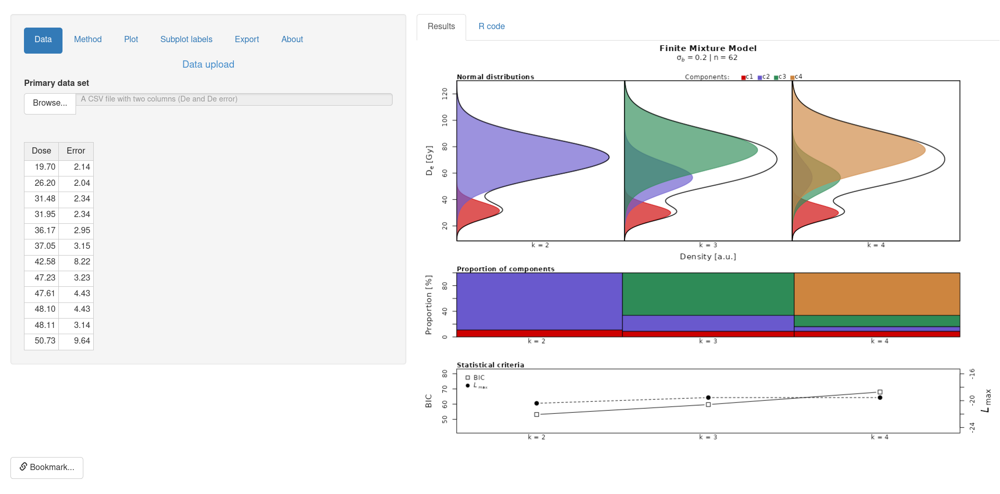
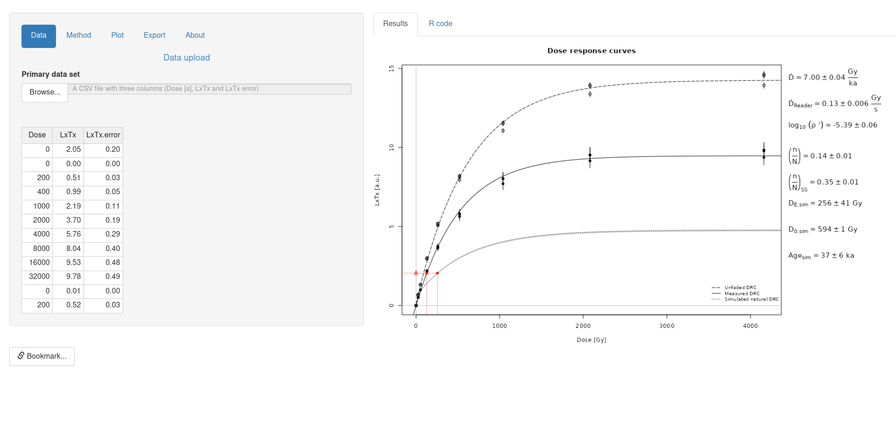
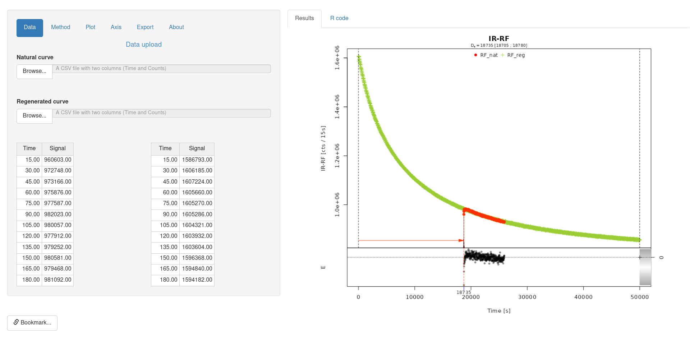
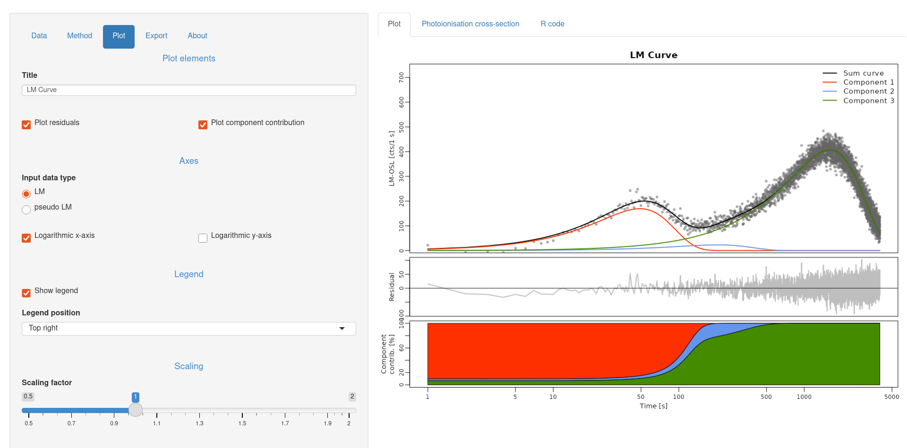

RLumShiny Release 0.2.5
Much of the work that took place during the Luminescence 1.1.0 timeframe
was devoted to adding new features to RLumShiny, the graphical
interface to Luminescence built on the Shiny framework. We see this
package as a good entry point to become acquainted with some of the functions
provided by Luminescence and their various options.
Our work for the RLumShiny 0.2.5 release concentrated on adding a bunch of new apps:
-
aliquotsizeto either estimate the number of grains on an aliquot or to compute the packing density (based oncalc_AliquotSize());
-
finitemixtureto fit a k-component mixture to a De distribution with differing known standard errors (based oncalc_FiniteMixture());  -
huntley2006to calculate the expected sample specific fraction of saturation based on the model of Huntley (2006), using the approach as implemented in Kars et al. (2008) or Guralnik et al. (2015) (based oncalc_Huntley2006());  -
irsarRFto analyse IRSAR RF measurements on K-feldspar samples performed using the protocol according to Erfurt et al. (2003) and beyond (based onanalyse_IRSAR.RF());  -
lmcurveto determine weighted non-linear least-squares estimates of the component parameters of an LM-OSL curve (Bulur 1996) for a given number of components (based onfit_LMCurve()). 
This phase work made us realise something that we had not fully appreciated
until then: RLumShiny is a great tool for developers. Indeed, the graphical
interface makes it a breeze to test out various combinations of function
arguments, and this led to discover quite a number of
cosmetic bugs in Luminescence (also a few crashes), and various
cases in which Luminescence was not as flexible as it could be.
Our future plans for RLumShiny contemplate adding a few more apps, but
specifically a way of facilitating data input and subsetting within the
graphical interface. While some building blocks are already available in the
package (although they are not exposed to the users), there is still quite a
bit of work to be done. That will be exciting and challenging at the same
time, but it is an important step to make RLumShiny a viable tool also for
the advanced data analyst.
We hope that RLumShiny 0.2.5 will be embraced by many people, both well-experienced users and those at their initial steps with luminescence-based analyses. We are also keen to hear of bugs or annoyances you may encounter!